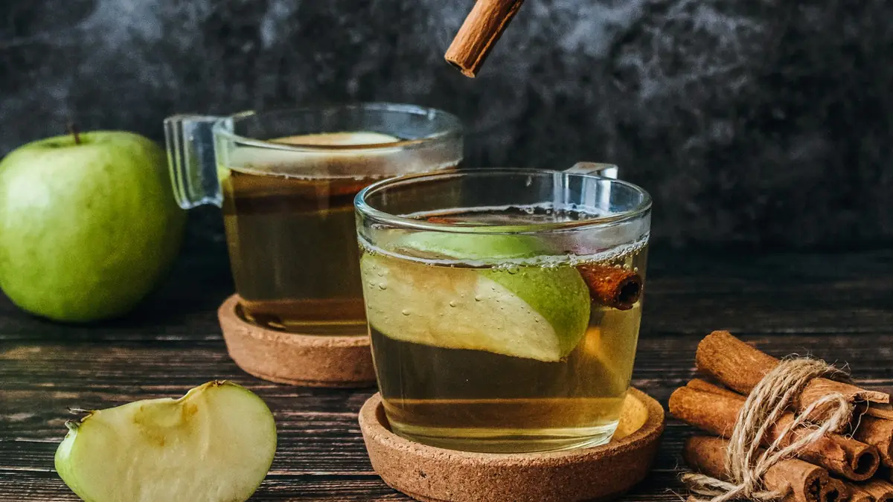

Home › Wine stories › Wassail: the Old Toast Behind England's Twelfth Night Drink
Wassail: the Old Toast Behind England's Twelfth Night Drink

Photo: Tijana Drndarski on Unsplash
How a medieval greeting meaning 'be in good health' became a steaming bowl of spiced ale, wine or cider, a carol, and a midwinter blessing for the apple trees.
Few festive words sound as old as wassail, and few have travelled further from their first meaning. Today it can be a hot spiced drink, a carol sung door to door, or a noisy winter ritual in a cider orchard. Underneath all of them sits a simple wish for someone's health, raised with a cup in hand.
The word comes from a greeting rather than a recipe. Merriam-Webster traces it through Middle English wæs hæil back to the Old Norse ves heill, literally 'be well', while the National Trust and Historic UK describe its Old English and Anglo-Saxon form as a call to 'be hale' or 'be in good health'. Hail here is simply an older cousin of hale, as in hale and hearty. The polite reply, recorded by around the twelfth century, was drinc hail: 'drink, and good health to you'.
From a toast it was a short step to the drink itself. By the 1400s, according to Merriam-Webster, wassail also meant the festive brew poured at Christmastime, and the word for 'drinking healths' soon stretched to cover riotous revelry in general. Recipes varied with the household purse: warmed ale, wine or cider, sweetened with sugar or honey, spiced with nutmeg, ginger or cinnamon, sometimes enriched with eggs, and served from one great communal bowl.
The most charming version was lambswool. Roasted apples were dropped into the hot spiced ale until their soft flesh burst and floated to the top as a pale froth, which looked rather like fleece. The Shakespeare Birthplace Trust still serves its own take each Twelfth Night, simmering ale or cider with apple, nutmeg, ginger and sugar.
Wassail belonged above all to the end of Christmas. Twelfth Night, the eve of Epiphany on 5 January, was the classic moment, and bands of revellers carried the bowl from house to house, singing for a refill and wishing their neighbours a happy New Year. The grandest households owned bowls worthy of the occasion: the National Trust points to a fine Restoration example at Dyrham Park, turned from lignum vitae, a dense tropical hardwood shipped from the Caribbean and fashionable in the late seventeenth century.
In the cider counties of the West Country and beyond, the toast was also offered to the orchards. Wassailers gathered around the oldest apple tree, tucked cider-soaked toast into its branches and banged pots or even fired guns to scare off bad spirits, all in the hope of a good harvest. Some still hold their wassail on Old Twelfth Night, 17 January, a date left over from the calendar change of 1752. Tales that the custom is a direct survival of pagan tree worship are appealing, but they remain folklore rather than documented history.
Wassail is easy to revive at home this season. Gently warm a dry English cider or a light, fruity red with a spoonful of sugar, a cinnamon stick, a little grated nutmeg and some roasted apple, never letting it boil. Pass the bowl, raise a cup, and say the oldest English toast there is: wassail, and drink hail in return.
Sources
- Wassail – Merriam-Webster Dictionary
- Wassailing: ritual and revelry – National Trust
- Wassailing – Historic UK
- Wassail – World Wide Words (Michael Quinion)
- A-wassailing We Did Go! – Shakespeare Birthplace Trust
The Wine Reference newsletter
New wines, stories and career guides, one email a week at most.
Over 18s only. Unsubscribe any time with one click. Your email is stored securely by Kit and never shared.
Support The Wine Reference
This guide is free, with no paywall. If it helped you choose a bottle, you can buy me a glass and keep it growing.
🍷 Buy me a glass